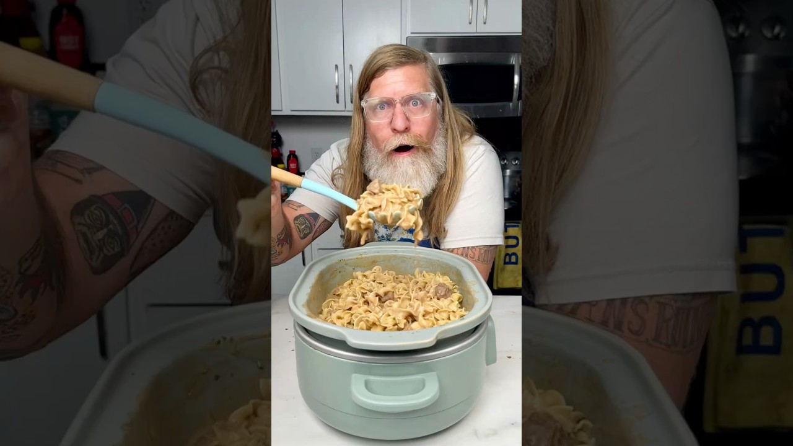

| Course | Main Dish |
| Categories | Beef, Noodle |
| Collections | Crockpot, Drew Cooks |
| Source | Drew Cooks – YouTube |
| Notes | see “Notes” below |

Reconstructed from the video's narration (spoken recipe) — the video has no written recipe in its description. Quantities and steps below are only those actually stated out loud; see "Gaps in this export" for what wasn't specified.
1 lb beef stew meat
1 packet French onion soup mix
1 carton beef broth
3 packets brown gravy mix
1 cup sour cream
1 package egg noodles (or any noodles), cooked
Parsley, to garnish (optional)
Red pepper flakes, to serve (optional)
Add the stew meat to the slow cooker.
Add the French onion soup mix, the carton of beef broth, and 3 packets of brown gravy mix. Stir together.
Put the lid on. Set to low for 6 hours (or high for less time).
When it's done, remove the lid and stir in 1 cup sour cream.
Stir in the cooked egg noodles.
Serve in bowls, garnished with parsley and red pepper flakes if desired.
Gap in this export: Size of the beef broth carton
Gap in this export: Sizes of the French onion soup mix and brown gravy packets
Gap in this export: Size of the egg noodle package
Gap in this export: Cook time on the high setting (only "less than" the low time)
Gap in this export: Number of servings